色の付いた枠のコードの、右上の「コピー」ボタンを押してください。コピーしたら、PDF を見ていた画面に戻ります（ブラウザーで PDF を見ていた時は「戻る」、VS Code で見ていた時は VS Code の窓に切り替えます）。
useEffect）練習のアプリは samples/03_react/ にあります。01 の HTML・CSS と、02 の TypeScript で作った物を、React で動く画面にします。この巻の画面の写しは、練習のアプリをビルドして Chrome で開き、実際に操作して撮った物です。
もっと詳しく:
kosu/05_React_フロントエンド.md、next/03-react-basics.mdにも、React の説明があります。
▶ 準備: 00 の 6.3（Node.js）。02 を終えていれば、もう入っています。下のコマンドは、PowerShell で資料のフォルダにいるところから打ちます。npm が止められたら npm.cmd と打ちます（00 の 6.3）。
cd webapp_learning\samples\03_react
npm install # 部品を入れる（最初の 1 回）
npm run dev # 開発用のサーバーを起動する
▶ ここで初めて出てくるコード
npm run（Node.js）:package.jsonのscriptsに書いたコマンドを動かすコマンド。npm run devは開発用のサーバーを起動し、npm run buildは本番用のファイルを作ります。止める時はCtrl＋Cです。
表示された http://localhost:5173/ をブラウザで開きます。ファイルを直して保存すると、すぐに画面に反映されます。止めるときは Ctrl＋C です。
| コマンド | 意味 |
|---|---|
npm run dev |
開発用のサーバー（Vite）。直すとすぐ反映される |
npm run check |
型を確かめる（tsc） |
npm run build |
型を確かめてから、サーバーに置くためのファイル（dist\）を作る |
npm run preview |
ビルドした物を、手元で開いて確かめる |
用語: Vite（ヴィート：React などの画面を、開発中はすぐ反映し、本番用には小さくまとめてくれる道具）
用語: React（リアクト：画面を部品に分けて作り、データが変わったら画面を自動で描き直してくれる、JavaScript の部品）
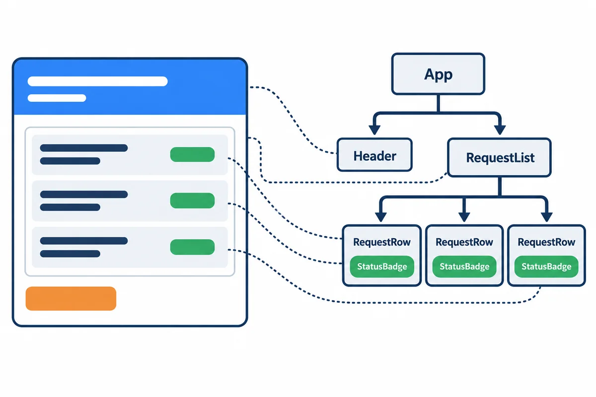
React の部品は、HTML のような物を返す関数です。いちばん小さな部品の「状態の札」を見てみます。
src/components/StatusBadge.tsx:
import type { RequestStatus } from "../types.ts";
// 状態ごとの CSS の class（01 HTML と CSS の 4 章と同じ色）
const className: Record<RequestStatus, string> = {
回覧中: "badge-circulating",
差し戻し中: "badge-returned",
引き戻し中: "badge-returned",
回覧完了: "badge-approved",
対応中: "badge-approved",
完了: "badge-done",
取り下げ: "badge-done",
};
/** 状態の札。props で状態を受け取って、色を変える */
export function StatusBadge({ status }: { status: RequestStatus }) {
return <span className={`badge ${className[status]}`}>{status}</span>;
}
▶ ここで初めて出てくるコード
<span>（React）: 文の一部分を囲む、特別な意味の無いタグ（JSX の中でも HTML と同じ）。状態の札など、一部だけ見た目を変える時に使います。({ 名前 })（JavaScript・TypeScript）: 関数の引数の({ status, label })は、渡されたオブジェクトから、statusとlabelを取り出して受け取る書き方です。React の部品（コンポーネント）が props を受け取る時によく使います。className=（React）: JSX では、HTML のclassの代わりにclassNameと書きます（classは JavaScript の言葉として使われているからです）。className="btn-primary"。
| 書き方 | 意味 |
|---|---|
export function StatusBadge(...) |
部品は関数。名前は大文字で始める（小文字だと HTML のタグと見なされる） |
return <span ...>{status}</span>; |
HTML のような書き方（JSX）で、画面の部品を返す |
className="..." |
HTML の class。JSX では className と書く（class は JavaScript の予約語のため） |
{status} |
{ } の中に、TypeScript の値や式を書ける |
Record<RequestStatus, string> |
7 つの状態のすべてに、class の名前を決めた表。状態を足して書き忘れると、tsc が教えてくれる |
使う側は、HTML のタグのように書きます: <StatusBadge status="回覧中" />。
用語: JSX（ジェイエスエックス：TypeScript（JavaScript）の中に、HTML のような書き方で画面を書ける仕組み。ファイルの拡張子は
.tsx）
用語: コンポーネント（component：画面の部品。React では、JSX を返す関数）
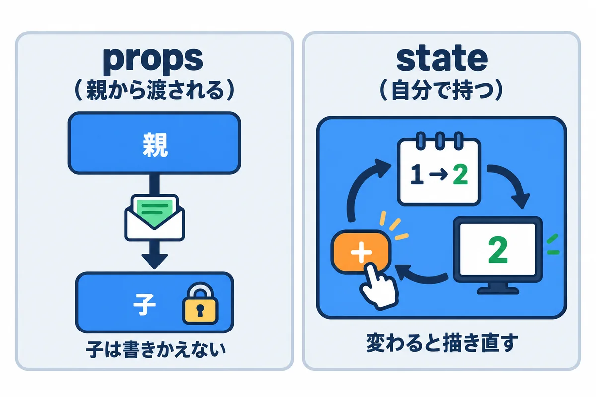
| props | state | |
|---|---|---|
| だれの物 | 親の部品が渡す | その部品が自分で持つ |
| 変えられるか | 子は変えない（読むだけ） | set... の関数で変える |
| 例 | StatusBadge の status |
一覧の「しぼる文字」、フォームの入力の値 |
state は、useState で作ります。
const [keyword, setKeyword] = useState(""); // 最初の値は空の文字
// keyword … 今の値 setKeyword("部品") … 値を変えて、描き直してもらう
▶ ここで初めて出てくるコード
useState()（React）: React の部品に「覚えておく値」（state）を作る関数（フック）。const [keyword, setKeyword] = useState("");で、今の値keywordと、値を変える関数setKeywordができます。setKeyword(新しい値)を呼ぶと、画面が描き直されます。const [ … ] =（JavaScript・TypeScript）:const [a, b] = 並び;は、並びの 0 番目をaに、1 番目をbに取り出す書き方です（分割代入）。React のconst [count, setCount] = useState(0);もこれで、「今の値」と「値を変える関数」の 2 つを受け取っています。
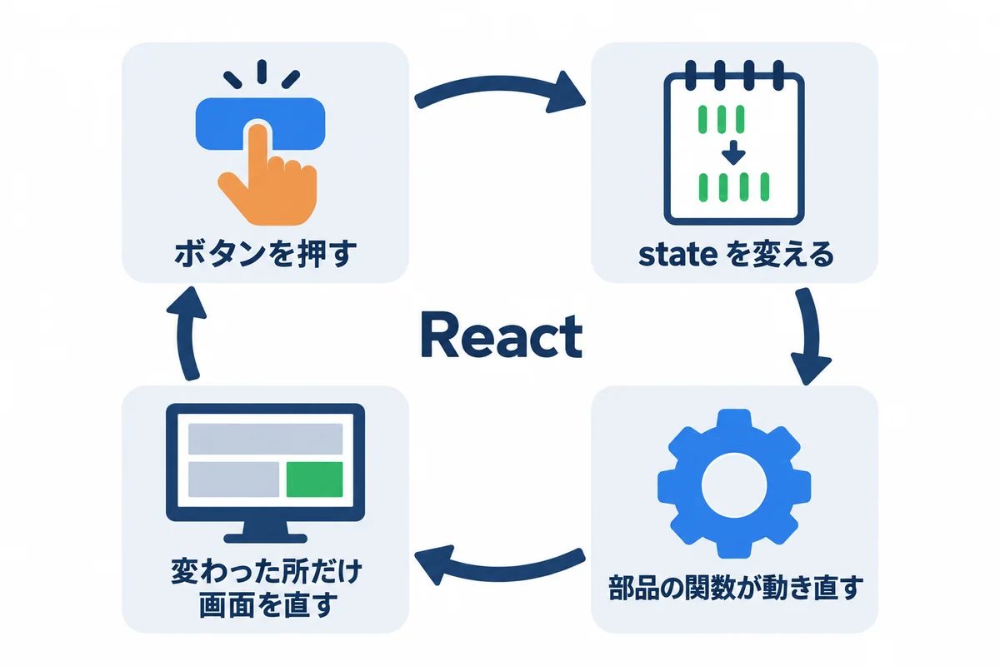
set... で state を変える。大事: state は、
set...を使わずに直接書きかえてはいけません（keyword = "部品"や、配列のpushなど）。React が変わったことに気付かず、描き直しません。配列やオブジェクトは、新しい物を作ってset...に渡します（6 章の図面）。
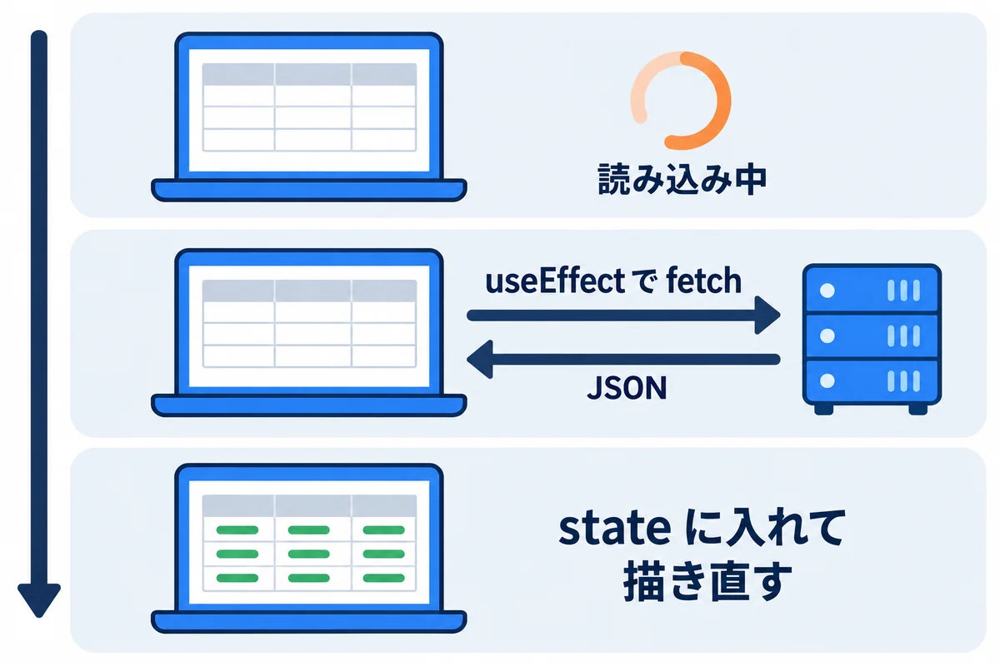
src/components/RequestList.tsx:
import { useEffect, useState } from "react";
import { fetchRequests } from "../api.ts";
import type { RequestItem } from "../types.ts";
import { StatusBadge } from "./StatusBadge.tsx";
/** 自分の依頼の一覧。開いたときにサーバーから読み込む */
export function RequestList() {
const [items, setItems] = useState<RequestItem[] | null>(null); // null = まだ読み込み中
const [keyword, setKeyword] = useState("");
useEffect(() => {
fetchRequests().then(setItems);
}, []); // [] = 画面を開いたときに 1 回だけ
if (items === null) return <p>読み込み中…</p>;
const shown = items.filter((r) => r.title.includes(keyword));
return (
<section>
<h1>自分の依頼</h1>
<input
className="search"
placeholder="件名でしぼる"
value={keyword}
onChange={(e) => setKeyword(e.target.value)}
/>
<table>
<thead>
<tr><th>番号</th><th>件名</th><th>希望の納期</th><th>状態</th></tr>
</thead>
<tbody>
{shown.map((r) => (
<tr key={r.id}>
<td>{r.id}</td>
<td>{r.title}</td>
<td>{r.dueDate}</td>
<td><StatusBadge status={r.status} /></td>
</tr>
))}
</tbody>
</table>
<p className="hint">{shown.length} 件</p>
</section>
);
}
▶ ここで初めて出てくるコード
.includes()（TypeScript）: 文字列（配列）に、その文字（値）が含まれていればtrueを返すメソッド。r.title.includes(keyword)は「件名に検索の言葉が入っているか」。useEffect()（React）: 「画面を描いたあとに、することがある」時に使う関数（フック）。useEffect(() => { … }, [見張る値])で、データを取ってくる・イベントを登録する、などをします。[ ]の中の値が変わった時だけ、もう一度動きます。<p>（React）: 段落のタグ（JSX の中でも HTML と同じ）。return <p>読み込み中…</p>;のように、部品が返す画面に使います。<section>（React）: ひとまとまりの部分（章）を表すタグ。<h1>（React）: いちばん大きな見出しのタグ（JSX の中でも HTML と同じ）。<input>（HTML）: 1 行の入力欄のタグ。typeで種類（text・password・hiddenなど）を、nameで送る時の名前を決めます。閉じタグはありません。<table>（React）: 表のタグ（JSX の中でも HTML と同じ）。<thead>（React）: 表の見出しの行をまとめるタグ。<tr>（React）: 表の 1 行のタグ。<th>（React）: 表の見出しのますのタグ。<tbody>（React）: 表の中身の行をまとめるタグ。<td>（React）: 表の中身のますのタグ。<td>{r.id}</td>のように、{ }の中に値を書けます。/…/（JavaScript・TypeScript）: JavaScript の/…/は、正規表現（文字の形を表す書き方）をそのまま書く形です。/\d+/は「数字が 1 つ以上」。.match(/…/)・.test(…)・.split(/…/)などで使います。記号ごとの意味は、この一覧の「正規表現」の表にあります。正規表現（正規表現）: 正規表現は、「こういう形の文字」を表すための、小さな書き方の決まりです。^\s*#は「行の頭から、空白がいくつかあって、#が来る」という形を表します。-match（PowerShell）・re.match（Python）・/…/（JavaScript）・Regex::new（Rust）などで、文字がその形に合うかを調べたり、合う所を取り出したりします。記号ごとの意味は、この一覧の「正規表現」の表にまとめています。() =>（JavaScript・TypeScript）:() => { … }は、名前の無い関数（アロー関数）の書き方です。( )の中が引数、=>の右が中身です。(e) => setKeyword(e.target.value)のように、1 つの式なら{ }を省けます。ほかの関数に「あとで呼んでもらう処理」を渡す時によく使います。.target（JavaScript・TypeScript）: イベント（e）の.targetは、イベントが起きたタグ（入力欄など）です。e.target.valueで、入力欄に今入っている文字を読めます。placeholder=（React）:placeholder="件名でしぼる"は、入力欄が空の時に、うすく見せる例の文字です。value=（React）: 入力欄のvalue={keyword}は、「入力欄に表示する値は、この変数」という結び付けです。onChangeで変数を変えると、表示も変わります（制御されたコンポーネント）。onChange=（React）:onChange={(e) => setKeyword(e.target.value)}は、入力欄の中身が変わるたびに動く処理です。key=（React）:key={r.id}は、並びをmapで表示する時に、1 つずつに付ける「見分けの印」です。React は、これで、どれが増えた・消えた・動いたかを見分けます。並びの中で重ならない値（番号など）にします。
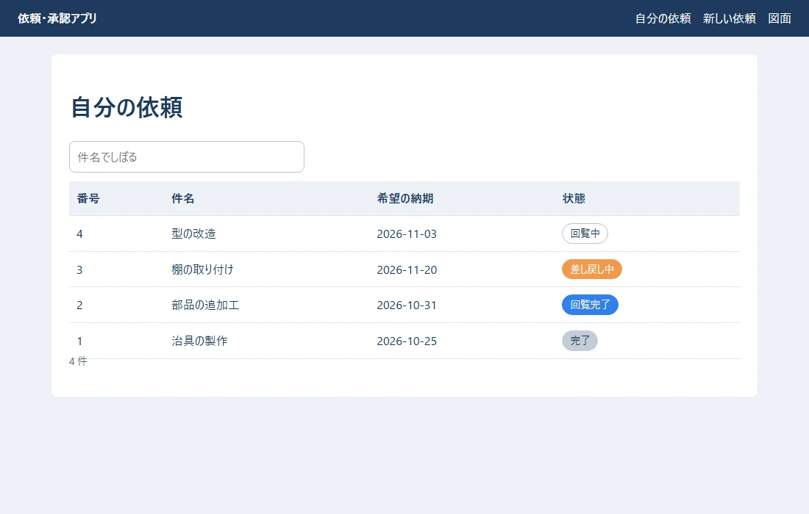
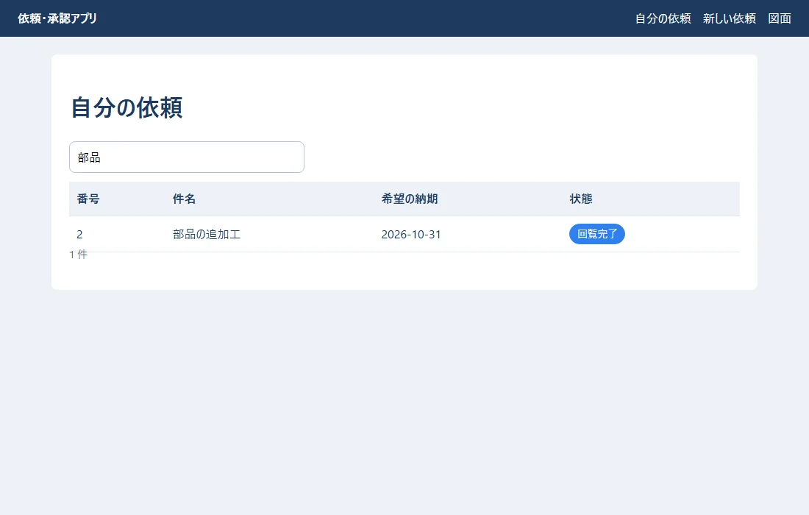
| 書き方 | 意味 |
|---|---|
useState<RequestItem[] \| null>(null) |
最初は null（まだ読み込み中）。届いたら配列 |
useEffect(() => { ... }, []) |
画面に出たあとに動く処理。最後の [] は「最初の 1 回だけ」 |
fetchRequests().then(setItems) |
読み込んで、届いたら state に入れる（ここで描き直される） |
if (items === null) return <p>読み込み中…</p>; |
読み込み中は、別の画面を返す |
value={keyword} onChange={(e) => setKeyword(e.target.value)} |
入力の値を state と結ぶ（5 章） |
shown.map((r) => <tr key={r.id}>...) |
配列の数だけ行を作る。key には、行ごとに違う値（番号）を付ける |
keyについて: React はkeyで「どの行がどの依頼か」を見分けて、変わった行だけを直します。keyが無いと警告が出ます。配列の何番目か（index）をkeyにすると、並べかえたときに入力の中身がずれることがあるので、データの番号を使います。練習では、サーバーの代わりに
src/api.tsの「にせのサーバー」を使っています。 0.3 秒待ってからデータを返し、本物のサーバーとのやり取りのまねをしています。06 では、ここを本物の Django の API に置きかえます。
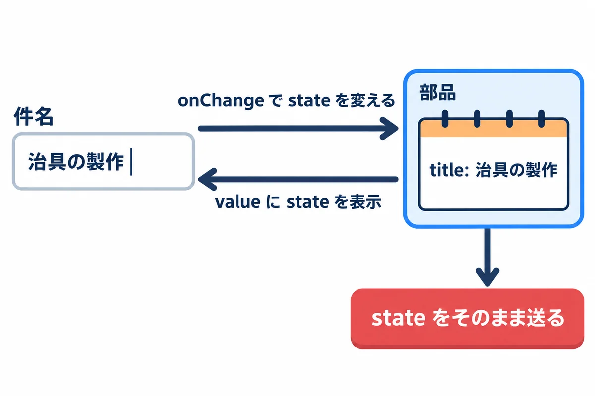
src/components/RequestForm.tsx:
import { useState, type FormEvent } from "react";
import { createRequest, employees } from "../api.ts";
type Props = { onCreated: (id: number) => void };
/** 依頼の入力。入力の値は、全部 state に持つ（制御されたコンポーネント） */
export function RequestForm({ onCreated }: Props) {
const [title, setTitle] = useState("");
const [detail, setDetail] = useState("");
const [dueDate, setDueDate] = useState("");
const [approvers, setApprovers] = useState<string[]>(["", "", ""]);
const [errors, setErrors] = useState<string[]>([]);
const [sending, setSending] = useState(false);
function setApprover(index: number, value: string) {
setApprovers((prev) => prev.map((v, i) => (i === index ? value : v)));
}
function validate(): string[] {
const list: string[] = [];
if (title.trim() === "") list.push("件名を入れてください");
if (title.length > 100) list.push("件名は 100 文字までです");
if (dueDate === "") list.push("希望の納期を入れてください");
const chosen = approvers.filter((a) => a !== "");
if (chosen.length === 0) list.push("回覧者を 1 人以上選んでください");
if (new Set(chosen).size !== chosen.length) list.push("同じ人を 2 回選べません");
return list;
}
async function handleSubmit(e: FormEvent<HTMLFormElement>) {
e.preventDefault(); // ブラウザが自分でページを送り直すのを止める
const found = validate();
setErrors(found);
if (found.length > 0) return;
setSending(true);
const created = await createRequest({ title, detail, dueDate, approvers: approvers.filter((a) => a !== "") });
setSending(false);
onCreated(created.id);
}
return (
<form onSubmit={handleSubmit}>
<h1>依頼の入力</h1>
{errors.length > 0 && (
<ul className="errors" role="alert">
{errors.map((m) => <li key={m}>{m}</li>)}
</ul>
)}
<div className="form-grid">
<label htmlFor="title" className="required">件名</label>
<input id="title" value={title} onChange={(e) => setTitle(e.target.value)} placeholder="例: 治具の製作" />
<label htmlFor="detail">内容</label>
<textarea id="detail" rows={3} value={detail} onChange={(e) => setDetail(e.target.value)} />
<label htmlFor="due" className="required">希望の納期</label>
<input id="due" type="date" value={dueDate} onChange={(e) => setDueDate(e.target.value)} />
<label className="required">回覧者</label>
<div className="approvers">
{approvers.map((value, i) => (
<select key={i} aria-label={`回覧者${i + 1}`} value={value} onChange={(e) => setApprover(i, e.target.value)}>
<option value="">{i === 0 ? "回覧者1（必須）" : `回覧者${i + 1}（なし）`}</option>
{employees.map((emp) => (
<option key={emp.no} value={emp.no}>{emp.name}（{emp.dept}）</option>
))}
</select>
))}
</div>
</div>
<div className="actions">
<button type="submit" className="btn-primary" disabled={sending}>
{sending ? "送っています…" : "依頼を送る"}
</button>
</div>
</form>
);
}
▶ ここで初めて出てくるコード
.trim()（JavaScript・TypeScript）: JavaScript・TypeScript で、文字列の前後の空白を取り除いたものを返すメソッド。.push()（JavaScript・TypeScript）: JavaScript・TypeScript で、配列の後ろに足すメソッド（元の配列が変わる）。.preventDefault()（React）: ブラウザーがふつうにする動き（フォームを送るとページを移動する など）を止めるメソッド。React でフォームを扱う時は、onSubmitの最初でe.preventDefault()を呼びます。<HTMLFormElement>（TypeScript）:FormEvent<HTMLFormElement>は、「<form>で起きた送信の出来事」の型。< >の中は、どのタグで起きたかを表します。<form>（HTML）: 入力欄とボタンをまとめて、送る（サーバーへ届ける）ためのタグ。actionに送り先、method="post"に送り方を書きます。<ul>（React）: 順番の無い並び（点の付いた並び）のタグ。中に<li>を並べます。<li>（React）: 並びの 1 つ（list item）のタグ。配列をmapで<li>にする時は、keyを付けます。<div>（React）: 特別な意味の無い箱のタグ（JSX の中でも HTML と同じ）。JSX ではclassではなくclassNameで CSS の class を付けます。<label>（HTML）: 入力欄の名前を表すタグ。<label for="title">件名</label>のforと、入力欄のidを同じにすると、名前を押しても入力欄が選ばれ、読み上げソフトにも伝わります。<textarea>（React）: 何行も書ける入力欄のタグ。React ではvalueとonChangeで中身を state と結び付けます。<select>（React）: 選ぶ欄のタグ。React ではvalueとonChangeで、選んだ値を state と結び付けます。<option>（React）:<select>の中の選べる 1 つ（JSX でも HTML と同じ）。React では、選ばれている物を<select value={…}>の方で決めます。<button>（React）: ボタンのタグ。onClick={() => …}で、押した時にすることを決めます。Set（JavaScript・TypeScript）:new Set(並び)は、同じ値を 1 つにまとめた集まりを作ります。new Set(chosen).size !== chosen.lengthは、「重なりを消すと数が減る」＝「同じ人が 2 回選ばれている」の確かめです。.size（JavaScript・TypeScript）:SetやMapの.sizeは、中の数です。{条件 && …}（React）: JSX の{errors.length > 0 && <ul>…</ul>}は、「条件が合う時だけ、右を表示する」書き方です。合わない時は、何も表示しません。onSubmit=（React）:<form onSubmit={handleSubmit}>は、フォームを送った時（送信ボタン・Enter）に動く処理です。中でe.preventDefault()を呼ぶと、ページの読み直しを止められます。role=（React）:role="alert"は、その部分の役わりを、読み上げソフトに伝える印です。alertは、すぐ知らせる大事なお知らせです。htmlFor=（React）: JSX では、<label>のforの代わりにhtmlForと書きます。id=（React）:idは、ページの中で 1 つだけの名前です。<label htmlFor="title">と組で使います。rows=（React）:<textarea rows={3}>のrowsは、見える行の数です。type=（React）:<input type="date">・<button type="submit">のtypeは、入力欄やボタンの種類です。aria-*=（React）:aria-label="…"のようにaria-で始まる属性は、読み上げソフトなどの手助けの道具に、見た目では分からないことを伝える印です。disabled=（React）:disabled={sending}は、sendingが true の間、ボタンを押せなくします（2 回送るのを防ぎます）。
何も入れずに「依頼を送る」を押したとき:
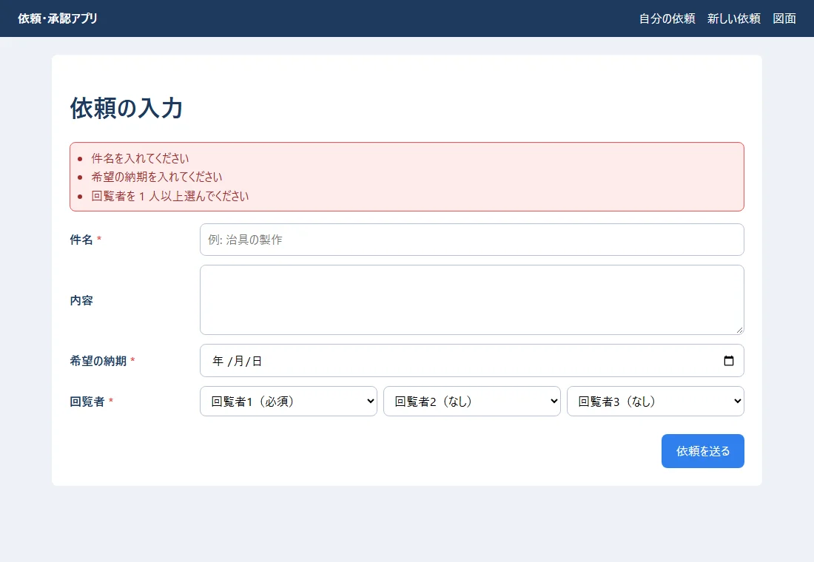
同じ人を 2 回選んだとき:
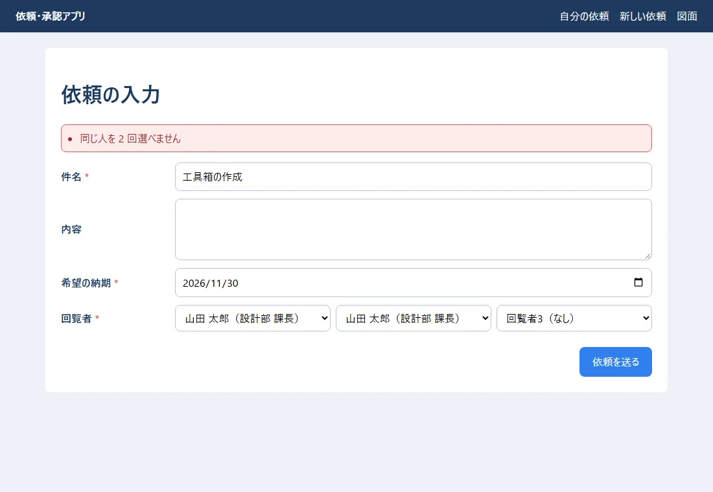
正しく入れて送ったとき: 一覧に戻り、新しい依頼（5 番）が「回覧中」で先頭に出ます。
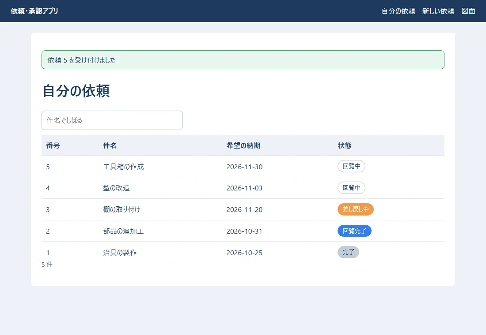
| 書き方 | 意味 |
|---|---|
value={title} onChange={(e) => setTitle(e.target.value)} |
入力欄の値は、いつも state と同じ（制御されたコンポーネント）。送るときは state をそのまま使える |
<label htmlFor="title"> |
HTML の for（JSX では htmlFor） |
setApprovers((prev) => prev.map(...)) |
前の値（prev）から、新しい配列を作って入れる（3 章の「大事」） |
onSubmit={handleSubmit} と e.preventDefault() |
送るボタンで、ブラウザがページを送り直すのを止めて、自分で処理する |
new Set(chosen).size !== chosen.length |
Set は重複を消すので、数が減れば「同じ人がいる」 |
disabled={sending} |
送っている間は、ボタンを押せなくする（二重に送らないため） |
{errors.length > 0 && (...)} |
条件が正しいときだけ表示する書き方 |
onCreated |
親（App）から渡された関数（props）。送れたことを親に知らせる |
ここでの確かめは、使う人のためのお手伝いです。 悪意のある人は、画面を通さずにサーバーへ直接送れます。同じ確かめを、サーバーでも必ず行います（06・10）。
src/components/DrawingPad.tsx:
import { useState, type PointerEvent } from "react";
type Rect = { kind: "rect"; x: number; y: number; width: number; height: number };
type Drawing = { version: 1; widthMm: number; heightMm: number; shapes: Rect[] };
const sample: Drawing = {
version: 1,
widthMm: 297,
heightMm: 210,
shapes: [
{ kind: "rect", x: 20, y: 20, width: 120, height: 70 },
{ kind: "rect", x: 160, y: 40, width: 90, height: 120 },
],
};
/** 図面を描く。ドラッグで四角を足し、図面は JSON で持つ */
export function DrawingPad() {
const [drawing, setDrawing] = useState<Drawing>(sample);
const [start, setStart] = useState<{ x: number; y: number } | null>(null);
// 画面の上の位置 → 図面の上の位置（mm）
function toMm(e: PointerEvent<SVGSVGElement>) {
const box = e.currentTarget.getBoundingClientRect();
return {
x: Math.round(((e.clientX - box.left) / box.width) * drawing.widthMm),
y: Math.round(((e.clientY - box.top) / box.height) * drawing.heightMm),
};
}
function handleUp(e: PointerEvent<SVGSVGElement>) {
if (start === null) return;
const end = toMm(e);
const rect: Rect = {
kind: "rect",
x: Math.min(start.x, end.x),
y: Math.min(start.y, end.y),
width: Math.abs(end.x - start.x),
height: Math.abs(end.y - start.y),
};
setStart(null);
if (rect.width < 2 || rect.height < 2) return; // 小さすぎる物は無視
setDrawing({ ...drawing, shapes: [...drawing.shapes, rect] }); // 新しいオブジェクトを作って入れる
}
const json = JSON.stringify(drawing);
return (
<section>
<h1>図面</h1>
<p className="hint">ドラッグで四角を描きます（{drawing.shapes.length} 個）。</p>
<svg
className="pad"
viewBox={`0 0 ${drawing.widthMm} ${drawing.heightMm}`}
onPointerDown={(e) => setStart(toMm(e))}
onPointerUp={handleUp}
>
{drawing.shapes.map((s, i) => (
<rect key={i} x={s.x} y={s.y} width={s.width} height={s.height} />
))}
</svg>
<div className="actions">
<button type="button" className="btn-secondary" onClick={() => setDrawing({ ...drawing, shapes: [] })}>全部消す</button>
</div>
<h2>保存する JSON（{new TextEncoder().encode(json).length} バイト）</h2>
<pre className="json">{JSON.stringify(drawing, null, 2)}</pre>
</section>
);
}
▶ ここで初めて出てくるコード
.getBoundingClientRect()（TypeScript）: タグが、画面のどこに、どの大きさで表示されているかを返すメソッド。マウスの位置を、図の中の位置に直す時に使います。.round()（JavaScript・TypeScript）:Math.round(x)は、小数を四捨五入して整数にする関数です。.min()（TypeScript）:Math.min(a, b)は、小さい方を返す関数です（大きい方はMath.max）。.abs()（TypeScript）:Math.abs(x)は、絶対値（マイナスを取った値）を返す関数です。<SVGSVGElement>（TypeScript）:<svg>のタグを表す型。PointerEvent<SVGSVGElement>は「<svg>の上で起きたマウスやペンの出来事」です。<svg>（React）: 図（線や四角）を描くタグ。中に<rect>（四角）・<line>（線）などを並べます。拡大しても線がぼやけません。<h2>（React）: 2 番目の大きさの見出しのタグ。<pre>（React）: 中の文字を、空白や改行もそのまま表示するタグ。JSON を見やすく表示する時に使います。Math（JavaScript・TypeScript）:Mathは、計算の関数が集まった物です。Math.round(3.6)は四捨五入で4、Math.max(1, 5)は大きい方の5です。.currentTarget（JavaScript・TypeScript）: イベントの.currentTargetは、イベントを受け取る処理（onPointerDownなど）を付けたタグそのものです（.targetは、中の、実際に押された物のことがあります）。.clientX（JavaScript・TypeScript）: マウスやペンのイベントの.clientX・.clientYは、画面の左上からの位置（ピクセル）です。.clientY（JavaScript・TypeScript）:.clientYは、画面の上からの位置（ピクセル）です。viewBox=（React）:<svg viewBox="0 0 400 300">のviewBoxは、SVG の絵の中の座標の範囲です。onPointerDown=（React）:onPointerDownは、マウス・ペン・指で押した瞬間に動く処理です。onPointerUpは離した時です。onPointerUp=（React）:onPointerUpは、マウス・ペン・指を離した時に動く処理です。x=（React）: SVG のx・yは、図形を置く位置です。y=（React）: SVG のyは、図形を置く縦の位置です。width=（React）:widthは、幅です。height=（React）:heightは、高さです。onClick=（React）:onClick={() => …}は、押された時に動く処理です。
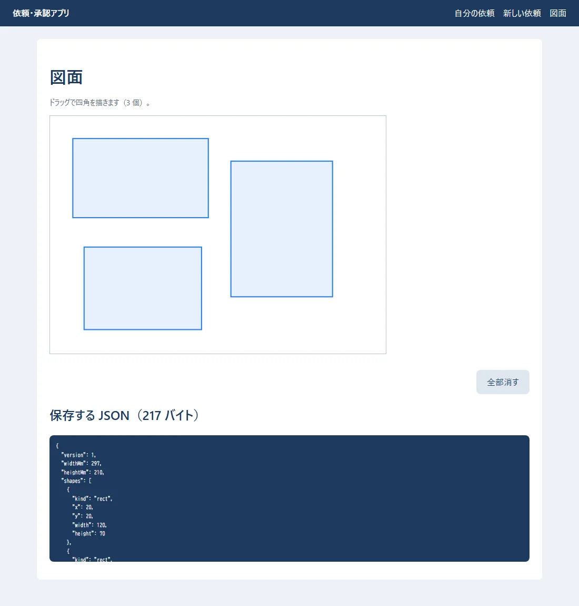
viewBox="0 0 297 210" で、中の座標を mm（A4 の横）にしています。onPointerDown）と、離した所（onPointerUp）から、四角の位置と大きさを計算します。version・widthMm・heightMm・shapes）で、state に持っています。保存するときは、この JSON をそのままサーバーに送ります（06）。setDrawing({ ...drawing, shapes: [...drawing.shapes, rect] }) のように、新しいオブジェクトと配列を作って入れます。drawing.shapes.push(rect) では、描き直されません。用語: SVG（エスブイジー：線・四角・円などを、座標の数で書き表す画像の形式。拡大してもぼやけない。HTML の中に直接書ける）
用語: スプレッド構文（
...：配列やオブジェクトの中身を広げて、新しい物にコピーする書き方。[...a, x]は「a の中身の後ろに x を足した新しい配列」）
src/App.tsx:
import { useEffect, useState } from "react";
import { DrawingPad } from "./components/DrawingPad.tsx";
import { RequestForm } from "./components/RequestForm.tsx";
import { RequestList } from "./components/RequestList.tsx";
type Page = "list" | "new" | "drawing";
// URL の # の後ろ（#/new など）で、どの画面を出すかを決める
function pageFromHash(): Page {
if (location.hash === "#/new") return "new";
if (location.hash === "#/drawing") return "drawing";
return "list";
}
export function App() {
const [page, setPage] = useState<Page>(pageFromHash());
const [message, setMessage] = useState("");
useEffect(() => {
const onChange = () => setPage(pageFromHash());
window.addEventListener("hashchange", onChange);
return () => window.removeEventListener("hashchange", onChange); // 片付け
}, []);
return (
<>
<header className="site-header">
<strong>依頼・承認アプリ</strong>
<nav>
<a href="#/">自分の依頼</a>
<a href="#/new">新しい依頼</a>
<a href="#/drawing">図面</a>
</nav>
</header>
<main>
{message && <p className="message">{message}</p>}
{page === "list" && <RequestList />}
{page === "new" && (
<RequestForm
onCreated={(id) => {
setMessage(`依頼 ${id} を受け付けました`);
location.hash = "#/";
}}
/>
)}
{page === "drawing" && <DrawingPad />}
</main>
</>
);
}
▶ ここで初めて出てくるコード
.addEventListener()（TypeScript）: 出来事（クリック・URL の#の変化など）が起きた時に動く関数を登録するメソッド。window.addEventListener("hashchange", onChange)。.removeEventListener()（TypeScript）:addEventListenerで登録した関数を、外すメソッド。useEffectの片づけで呼んで、同じ関数が何度も登録されるのを防ぎます。<header>（React）: ページの上の帯を表すタグ（JSX の中でも HTML と同じ）。<strong>（React）: 「大事」という意味のタグ（太字）。<nav>（React）: メニューを表すタグ。<main>（HTML）: ページの「いちばん大事な中身」を表すタグ。ヘッダーやメニューを除いた本体を囲みます。<>…</>（React）: JSX の<> … </>は、名前の無い入れ物（フラグメント）です。部品は 1 つの物を返す決まりなので、いくつも並べたい時に、余分なタグを増やさずに包みます。href=（React）:<a href="#/">のhrefは、リンク先です。#/で始まる場所は、ページを読み直さずに、画面の中だけで切りかえるのに使っています。
src/main.tsx（React を HTML の <div id="root"> に入れる、いちばん最初の所）:
import { StrictMode } from "react";
import { createRoot } from "react-dom/client";
import { App } from "./App.tsx";
import "./style.css";
createRoot(document.getElementById("root")!).render(
<StrictMode>
<App />
</StrictMode>,
);
▶ ここで初めて出てくるコード
.getElementById()（TypeScript）:document.getElementById("root")は、id="root"のタグを探して返す関数。React は、ここに画面を描きます。最後の!は「必ずある」と TypeScript に伝える印です。.render()（React）:createRoot(要素).render(<App />)は、React の部品（ここでは<App />）を、その要素の中に表示します。React の画面は、ここから始まります。<StrictMode>（React）: 開発の時だけ、まちがいを見つけやすくするために、部品をわざと 2 回描いてみるなどの確かめをする、React の部品。本番の動きには影響しません。値!（TypeScript）:document.getElementById("root")!の最後の!は、「これは null ではないと、自分が保証する」と TypeScript に伝える印です（非 null 表明）。本当に null だと、動く時にエラーになるので、確かな時だけ使います。createRoot()（React）:createRoot(document.getElementById("root")!)は、HTML の<div id="root">の中に、React の画面を描く場所を作る関数です。.render(<App />)で、いちばん外側の部品を描きます。
#/new などで、どの画面を出すかを決めています。本物のアプリでは、React Router のような部品を使うと、/requests/5 のような URL も扱えます（06）。useEffect が返す関数（return () => ...）は、部品が画面から消えるときの片付けです。<StrictMode> は、開発中だけ、間違いを見つけやすくするために、一部の処理をわざと 2 回動かします（本番では 1 回）。| 症状 | 原因 | 直し方 |
|---|---|---|
| 入力しても、文字が入らない | value を付けたのに onChange で state を変えていない |
onChange={(e) => setX(e.target.value)} を付ける |
| 値を変えたのに、画面が変わらない | state を直接書きかえた（push など） |
新しい配列・オブジェクトを作って set... に渡す |
警告 Each child in a list should have a unique "key" prop |
map で作った物に key が無い |
データの番号を key にする |
| 画面が何度も読み込みを繰り返す | useEffect の最後の [] を忘れた |
[]（最初の 1 回だけ）を付ける |
| 部品が表示されない／HTML のタグとして扱われる | 部品の名前が小文字で始まる | 大文字で始める |
class が効かない |
JSX で class と書いた |
className |
Cannot find module './style.css'（tsc） |
CSS の読み込みの型の説明が無い | tsconfig.json の "types": ["vite/client"] |
| 本番でだけ画面が真っ白 | 部品の置き場所の URL の設定（Django に入れるときの base） |
onprem の 05 の 6.5 |
StatusBadge を使って、一覧の上に「回覧中」「差し戻し中」の札の見本を並べてください。useState をもう 1 つ。filter の条件を足す）。new Date().toISOString().slice(0, 10) で今日の日付の文字）。drawing.shapes.slice(0, -1)）。答えの例: 4 は <button type="button" onClick={() => setDrawing({ ...drawing, shapes: drawing.shapes.slice(0, -1) })}>最後の 1 つを消す</button>。
| 用語 | 短い説明 | 章 |
|---|---|---|
| React・Vite | 画面を部品で作る部品／その開発の道具 | 1 |
| コンポーネント・JSX | 画面の部品／HTML のような書き方 | 2 |
| props・state | 親から渡される値／部品が持つ値 | 3 |
| useState・useEffect | state を作る／画面に出たあとに動く処理 | 3・4 |
| key | 一覧の行を見分ける印 | 4 |
| 制御されたコンポーネント | 入力の値を state に持つ書き方 | 5 |
| SVG | 座標で書く画像の形式 | 6 |
| スプレッド構文 | ... で中身を広げてコピーする |
6 |
| StrictMode | 開発中の間違い見つけの仕組み | 7 |